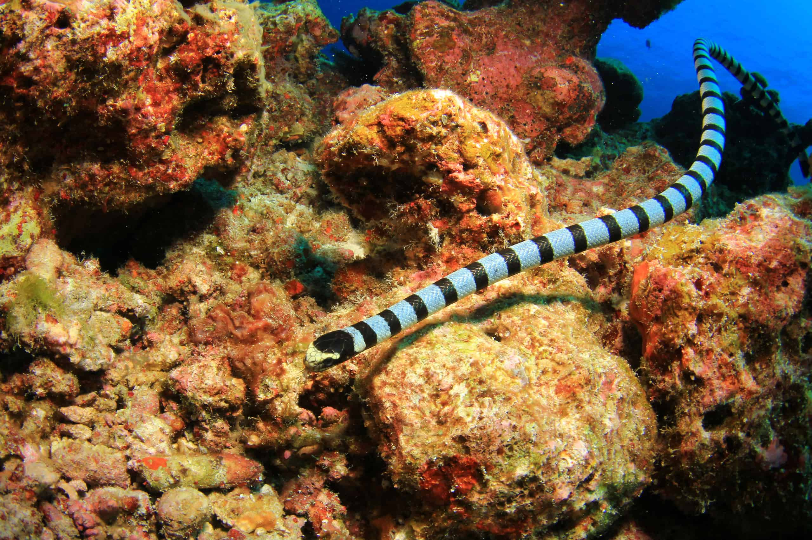
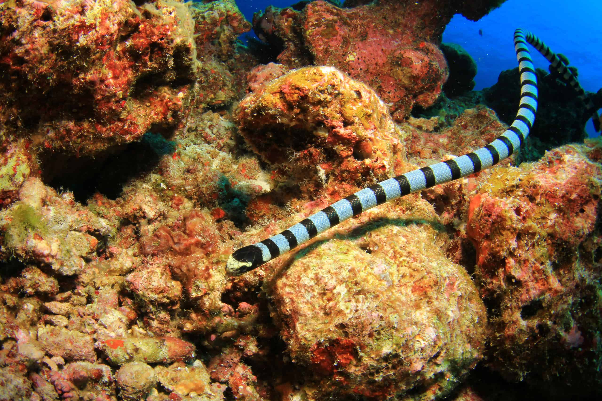
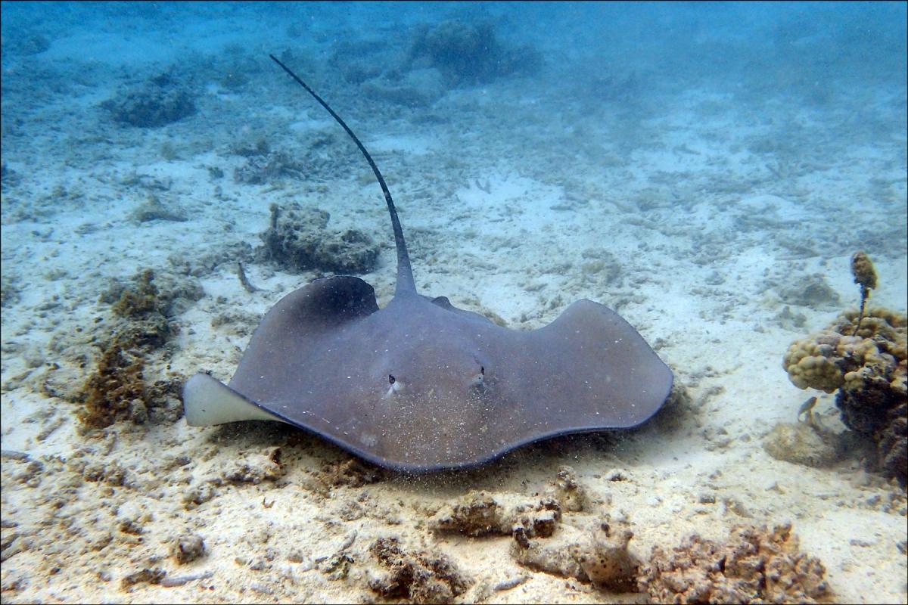
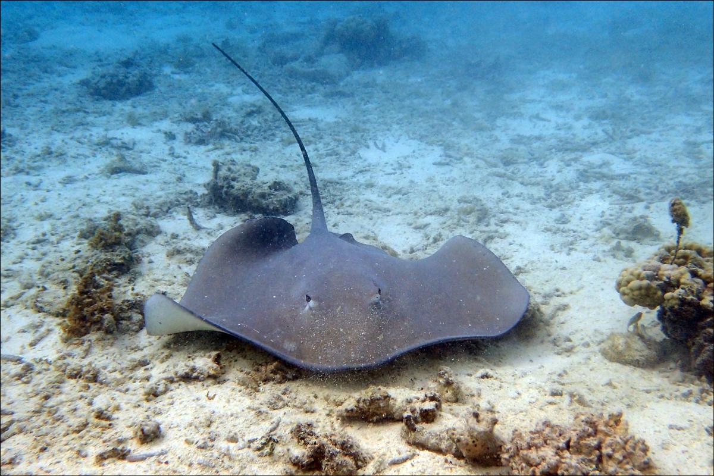
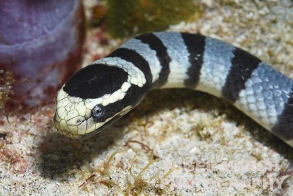
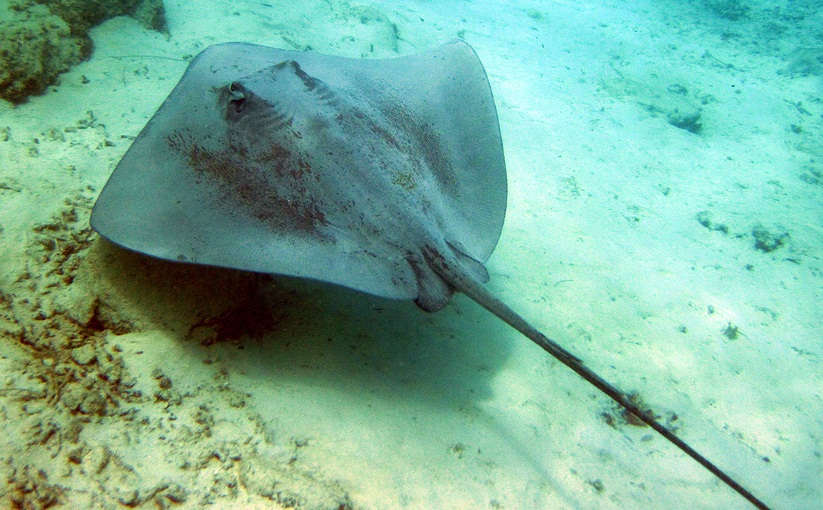
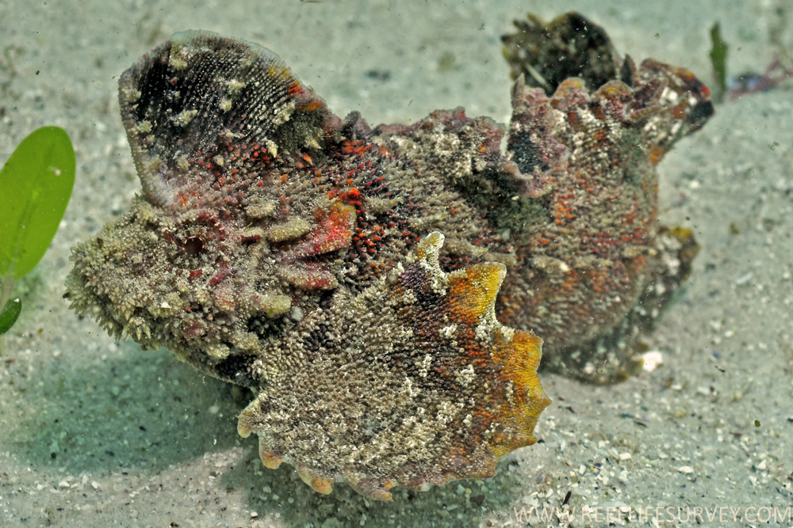
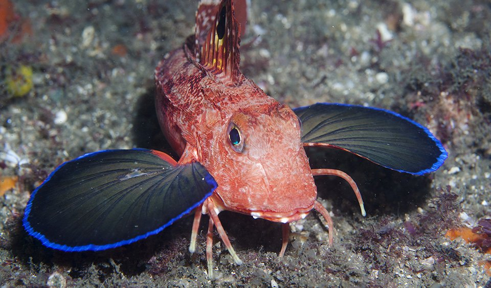
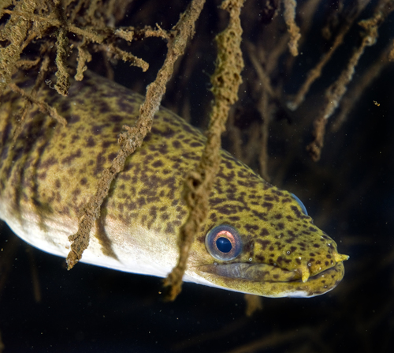

 



author here

Tawi-Tawi Sea Snake
A marine snake endemic to the waters around the Tawi-Tawi archipelago in the Philippines.
author here

Pawikan
Sea turtles, ancient marine reptiles known for their long migrations, unique shells, and vital role in marine ecosystems.
author here

Philippine Butterflyfish
A colorful marine fish. It has a disc-shaped body adorned with vibrant colors and intricate patterns, including stripes and spots.
author here

Whale Shark
Largest fish species, known for its gentle demeanor and impressive size, reaching up to 18 meters in length.
author here

Pufferfish
A small to medium-sized fish known for their unique ability to inflate their bodies as a defense mechanism
author here

Philippine Rabbitfish
A colorful marine fish. It is herbivorous, feeding mainly on algae and seagrasses, and possesses venomous spines for defense.
author here

Blue Spotted-Stingray
A striking species of stingray found in the tropical Indo-Pacific region, including the coastal waters of the Philippines.
author here

Pink Whipray
A large, flattened ray native to the coastal waters of the Philippines.
author here

Velvet
A demersal fish is known for its elongated, flattened body and broad, triangular head.
author here

Gurnard
A fish with wing-like pectoral fins that they use for "walking" along the sea floor.
author here

Violet Goby
the smallest commercial fish in the world, endemic to the freshwater lakes of Bicol, Philippines.
author here

Philippine Mottled Eel
A distinct species with an elongated body and a dark and light brown mottled pattern, giving it a marbled appearance.
author here

Thresher Shark
A shark characterized by its long, whip-like tail, which is longer than the length of its body,
author here

Philippine Seahorse
These small, delicate creatures inhabit coral reefs and are known for their distinctive horse-like heads and prehensile tails.